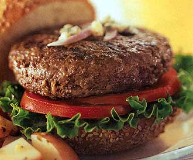
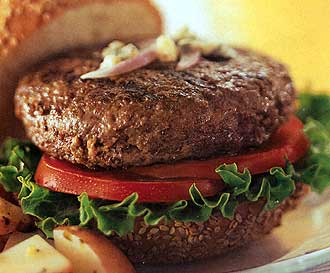

Yukon Territory Food and Drink
Some of the Yukon's food is very distinctive but difficult to produce commercially. There are restaurants
throughout the area, but the best selection is in Whitehorse and Dawson City. Most alcohol is imported from
other areas of Canada and the USA.
Specialities:
- Moose meat is cooked in several ways, from steaming to smoking or roasting, and accompanied by sourdough and vegetables.
- Dall sheep, mountain goat, caribou and porcupine are also eaten, often in burgers.
- Wild seafood includes Arctic grayling, trout, Kokanee salmon, Alaska king crab and halibut.
- Yukon's gold mining past is reflected in some specialities, such as buffalo burgers, musk ox chops and Alaskan salmon.
Regional drinks:
Whitehorse is home to the Yukon Brewing Company, which produces unique lagers and ales.
The Downtown Hotel in Dawson City is famous for the Sourtoe cocktail, which is served with an actual dehydrated human toe
preserved in salt.

 
